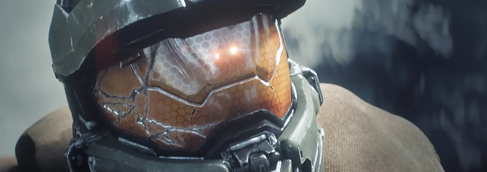

¿El principio del fin? Encuesta de Xbox pregunta a fans si seguirán jugando Halo Infinite
La compañía también pidió la opinión de los jugadores sobre el trabajo de 343 Industries
Halo Infinite no cumplió las expectativas de todos y sus errores han puesto en duda el futuro de la franquicia entera. Xbox conoce la importancia que tiene la IP en su historia, así que recientemente hizo una encuesta para saber la opinión de los fans sobre el reciente juego y el trabajo de 343 Industries.
Algunas de las preguntas llamaron mucho la atención de la comunidad, pues ponen en duda la calidad del trabajo del estudio y la vigencia de Halo Infinite. La compañía es directa e incluso pregunta a los jugadores si seguirán disfrutando el título o si ya lo abandonaron.
XBOX quiere retroalimentacion sobre HALO y el trabajo de 343I
Parece que la encuesta será útil para definir el futuro de Halo Infinite, pues pregunta si los jugadores aún disfruta el título y sobre los modos de juego que les gustaría ver en próximas actualizaciones. También se cuestiona a los fans sobre la forma en que 343I ha gestionado el soporte y el desarrollo como tal del juego.
Algunos fans están preocupados por la encuesta y el tono de sus preguntas, pues temen que Xbox decida parar el soporte para Halo Infinite antes de lo esperado debido a sus tropiezos. Inicialmente, se prometieron al menos 10 años de soporte, pero 343i no ha hablado sobre el tema en meses recientes.
La encuesta también pregunta a los jugadores qué tan satisfechos están con la comunicación de 343i y la credibilidad que tiene el estudio en cuanto a su hoja de ruta y nuevo contenido prometido.
Está claro que Xbox busca retroalimentación para mejorar la situación del estudio y su franquicia estelar. Así pues, la encuesta no necesariamente significan malas noticias para Halo Infinite, que seguramente continuará activo. Sin embargo, esto no deja de ser una señal de alarma para muchos.